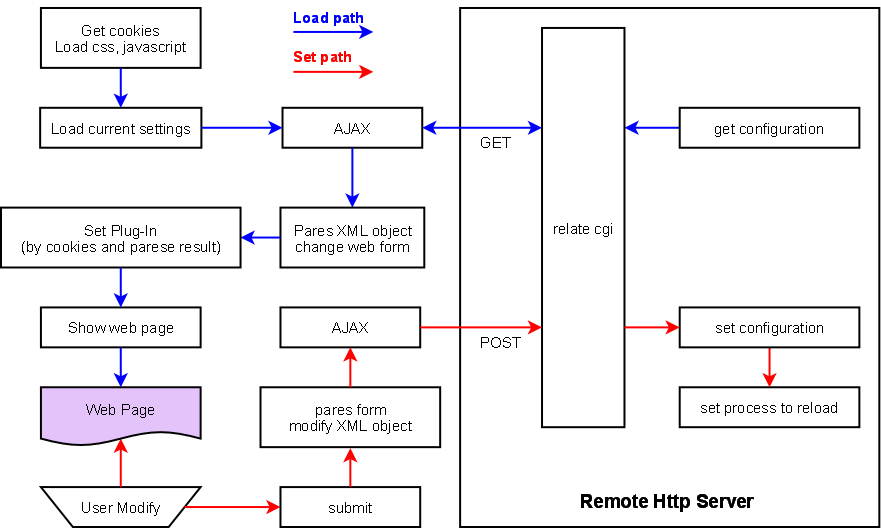

The Kilrogg webpages use the AJAX (Asynchronous JavaScript and XML) technologies to instead the form submit method.
The operation path of loading pages and submit modification form is described in the following diagram.

There are three key entries effect the operation result,
- HTML input form design
- JavaScript
- Lua CGIs
The input form is for display current settings in loading path and in setting path the form should catch the user modified value.
Either on loading or setting path, there is a JavaScript for each page to parse the XML document object. In the loading path, the scripts parse the server returned XML document to change the input form to display current setting. And in the setting path, the scripts parse the modified form to modify XML document, then send back to server.
On the server, there is a CGI program for each page to handle the client request. In the loading path, the CGI programs fetch the relate XML file and send to client. And in the setting path, the CGI programs replace the client returned XML file to relate file and tell the correct process to reload or relate system application to reset.
Assume the sever processes pass the standalone test and work correctly. If these three entries are design well, the user operation will be set correctly. Otherwise, some of these three entries might be wrong designed.
We follow the verification list to test each page.